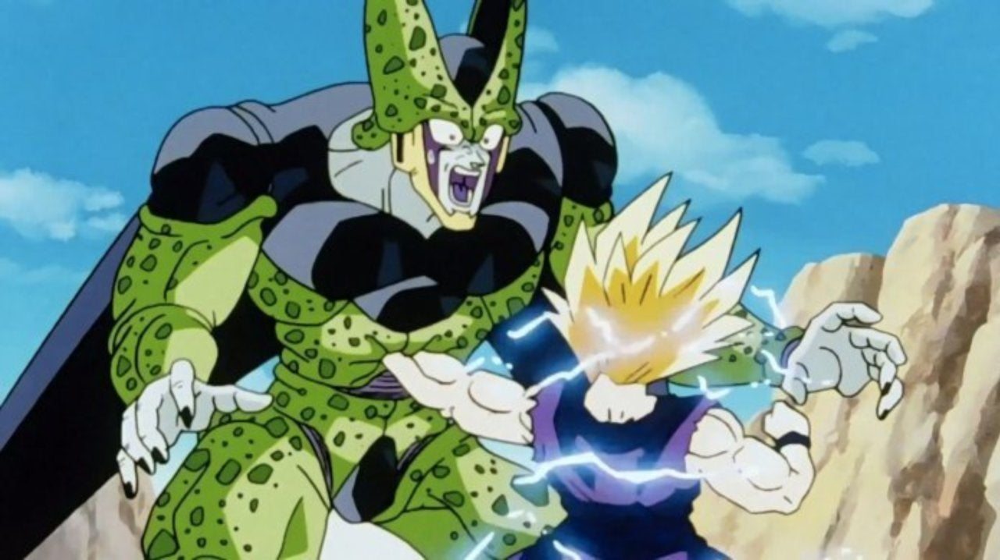

Dragon Ball Z – Resumo dos arcos
Dragon Ball Z – Arco dos Saiyajins
Após cinco anos de paz, a vida de Goku foi abalada mais uma vez com a chegada de Raditz, declarando-se o irmão mais velho de Goku e membro da quase extinta raça Saiyan. Sequestrando Gohan, o filho de quatro anos de Goku e Chi-Chi, Goku deve se unir a seu antigo arqui-inimigo Piccolo para recuperá-lo. Após a morte de Raditz, dois Saiyans mais poderosos, Vegeta e Nappa, decidiram usar as esferas do dragão da terra para ganhar a vida eterna. Com Goku morto, os guerreiros da Terra devem treinar mais do que nunca para se preparar para a chegada dos Saiyans.
Dragon Ball Z – Arco do Freeza
Após a batalha com os Saiyajins na Terra, Gohan, Kuririn e Bulma dirigem-se ao planeta natal de Piccolo, Namek, em busca de novas esferas do dragão para reviver seus camaradas mortos. Infelizmente, o vilão mais temido do universo, Freeza, também está procurando pelas esferas do dragão. Na convocação de Freeza, a colorida e enérgica Força Ginyu chega ao planeta Namekusei liderada pelo Capitão Ginyu. Gohan e Kuririn devem unir forças com Vegeta se desejam enfrentar os soldados de Freeza. Tendo derrotado a Força Ginyu, nossos heróis devemse recompor, mas é tarde demais, pois Freeza chegoucom força total. A verdadeira batalha em Namekuseiacontece e Goku atinge o Super Sayajin pelaprimeira vez.
Dragon Ball Z – Arco dos Androides
Trunks retorna do futuro para avisar os guerreiros da Terra que o Red Ribbon Army voltou, na forma de um par de andróides. Dr. Gero criou as maiores máquinas de matar conhecidas pelo homem e seu alvo é Son Goku. Depois de treinar por três anos em preparação para os Androids, Goku e seus amigos saem para finalmente enfrentá-los. No entanto, após Trunks voltar para oferecer ajuda, ele revela que os dois andróides com os quais eles lutaram todo esse tempo não são os mesmos que ele conhece do futuro.
O Cell artificial apareceu, e ele não vai parar pornada para alcançar sua forma perfeita. Enquantoisso, Goku acorda após se recuperar de seu víruscardíaco e decide levar seu filho para a Câmara doTempo Hiperbólica para treinar, mas não antes deVegeta ter sua primeira oportunidade. Depois deabsorver os andróides 17 e 18, Cell atinge suaforma perfeita. Com Goku e Gohan ainda treinando naCâmara do Tempo Hiperbólica, cabe a Vegeta e Trunkspará-lo. Cell realiza um torneio de artes marciaispara celebrar sua nova perfeição. Enquanto sepreparam para os Jogos de Cell, nossos heróis devematingir novos níveis de Super Saiyajin mais umavez, pois a falha em derrotar Cell resultará nadestruição da Terra.
Dragon Ball Z – Arco do Majin Boo
Vários anos após a batalha com Cell, Gohan agora com 16 anos se matricula no ensino médio. Para proteger Satan City do mal, ele assume a personalidade do Grande Saiyaman. No entanto, após Goku anunciar que participará do próximo Torneio Mundial de Artes Marciais, Gohan deve treinar para se preparar para o torneio. Goku recebeu uma liberação de 24 horas do outro mundo e compete no último Torneio Mundial de Artes Marciais junto com seus amigos e família. No entanto, nem tudo é tão simples quanto parece, e o grupo logo se vê envolvido em circunstâncias mais sinistras.
O demônio conhecido como Buu foi criado há cinco milhões de anos pelo mago negro Bibidi. Agora seu filho, Babidi, apareceu e planeja libertar Majin Buu novamente na esperança de conquistar o Universo em nome de seu pai. O Supremo Kai deve contar com a ajuda dos Saiyajins se eles quiserem impedir essa nova ameaça. O demônio Majin Buu foi libertado de seu confinamento após milhões de anos e, apesar de sua aparência e mentalidade infantil, ostenta mais poder do que qualquer coisa que nossos heróis já tiveram que lidar antes.
Majin Buu atingiu um nível ainda maior de poder e sede de sangue. Com o tempo de Goku no fim, Vegeta morto e Gohan fora do mundo, a última chance de sobrevivência da Terra está nas mãos dos dois jovens Saiyajins Goten e Trunks e sua habilidade de aplicar a técnica de fusão a tempo. Majin Buu voltou à sua forma original e destrói a Terra sem hesitação. Com Goku e Vegeta sendo os únicos guerreiros sobreviventes, os dois devem encontrar uma maneira de parar Buu ou então o Universo inteiro estará em perigo. É aqui que o Goku consegue finalmente derrotar Buu com a ajuda da energia de todos da terra.